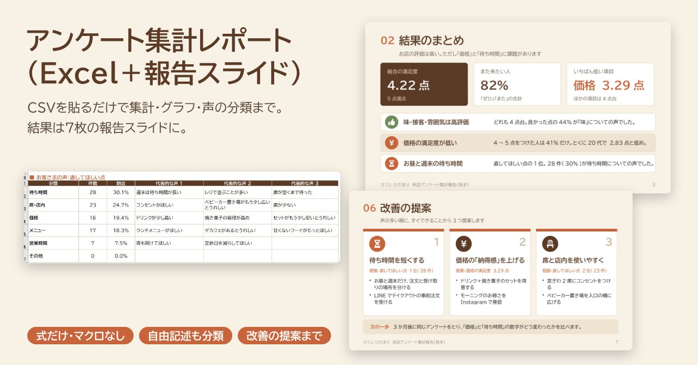
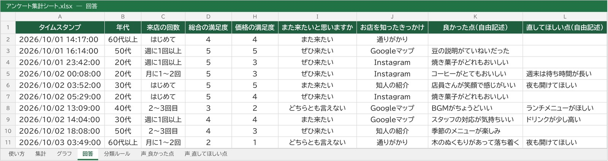
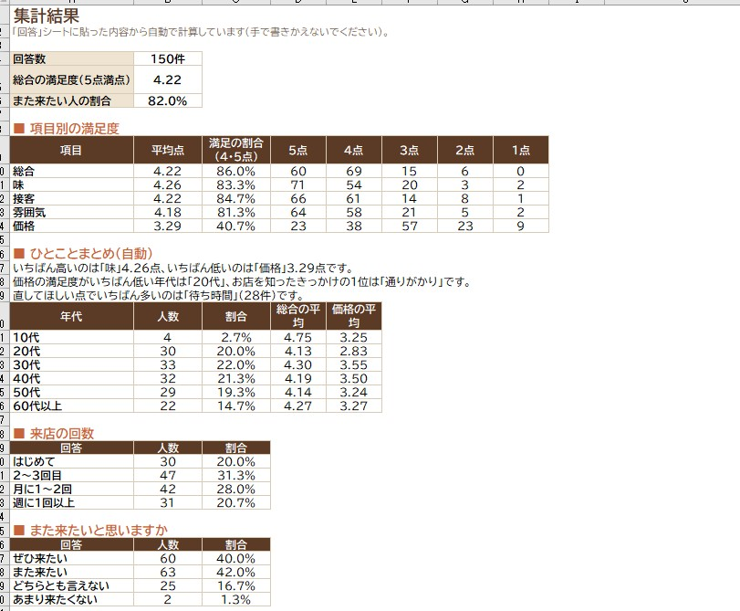
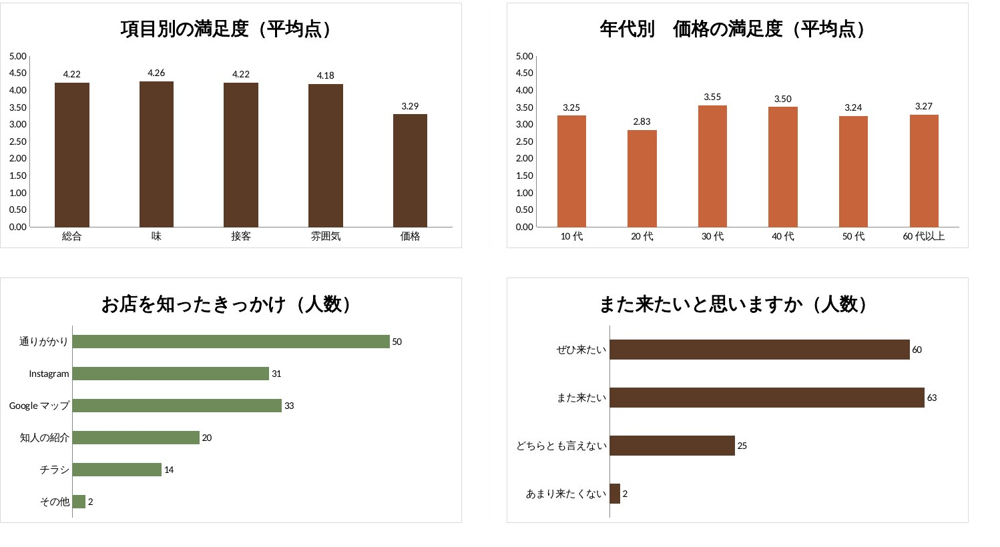
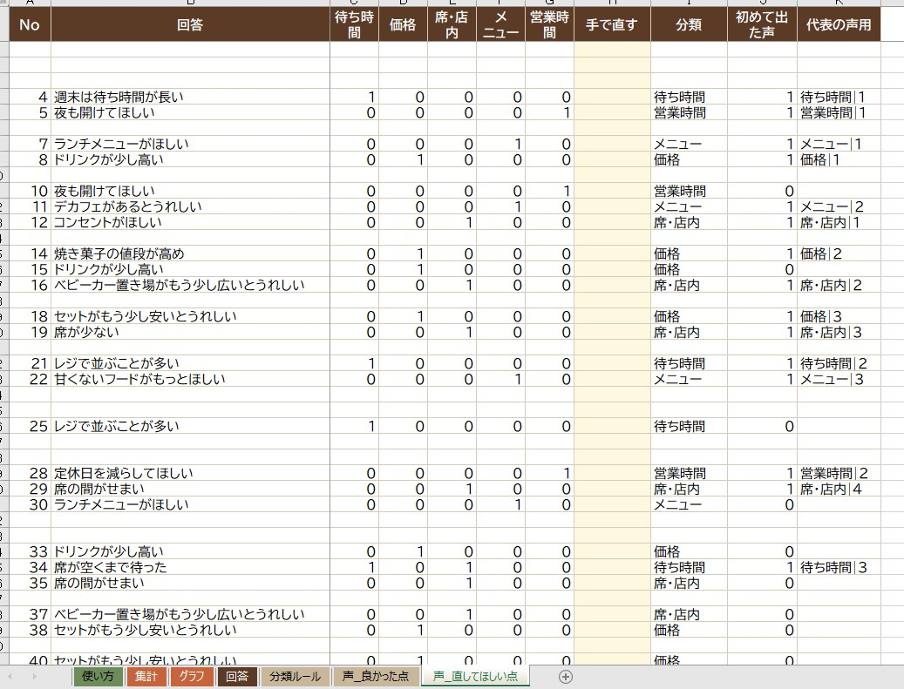
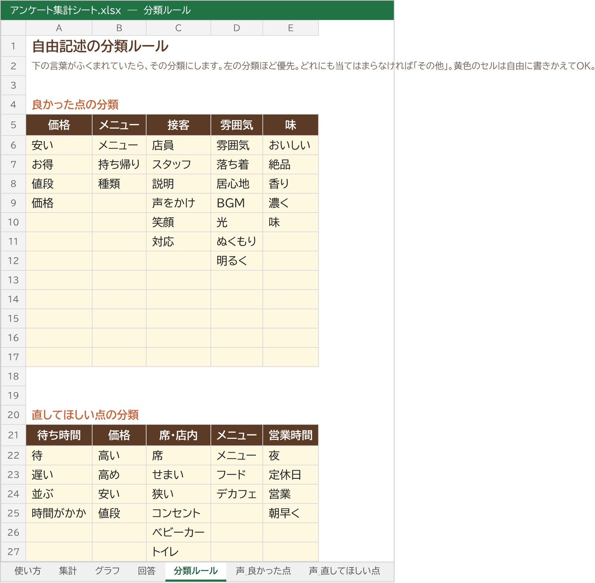
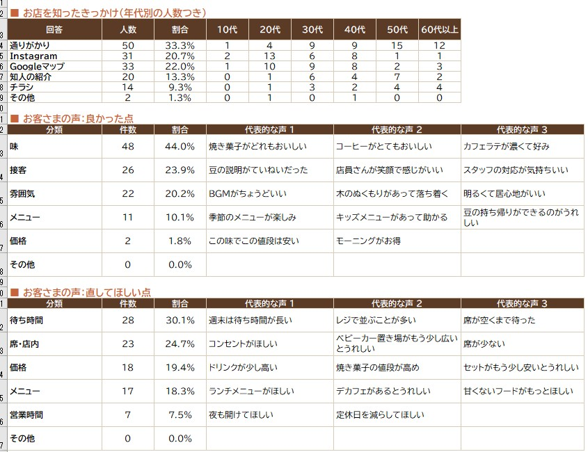

← 制作実績一覧へ戻る
見本ファイルつき
アンケート集計レポート（Excel＋報告スライド）
お店のアンケートの回答を、貼るだけで集計できるExcelと、結果を「次に何を直すか」までまとめた報告スライドのセットで作りました。自由記述の「お客さまの声」も、言葉のルールで自動で分類して数えます。

想定した依頼
「お店でGoogleフォームのアンケートをとったけれど、集計の仕方がわからない。結果を見やすくまとめて、次に何をすればいいか知りたい。次回からは自分で集計できるようにしたい」。小さなお店や教室からのご相談を想定して作りました。
作ったもの
開業1年目の架空のお店「カフェ ひだまり」の来店アンケート（1か月・150件）を題材に、集計Excelと報告スライドを作りました。年代・来店回数・5つの満足度・また来たいか・知ったきっかけ・自由記述2問を集計しています。
スライドを1枚ずつ見る
集計Excel
フォームの回答CSVを「回答」シートに貼るだけで、件数・平均点・割合・年代別のクロス集計・グラフ・お客さまの声の分類がすべて更新されます。マクロは使っていないので、ExcelでもGoogleスプレッドシートでも開けます。






工夫した点
- 貼るだけで、次回から自分で集計できる：計算はすべて式で、マクロはなし。次のアンケートでも、回答を貼りかえるだけで同じ集計ができます。
- 自由記述も数字にする：「待ち時間」「価格」などの分類ごとに言葉のルールを決めて、声を自動で分けて数えました。ルールはシート上で自由に直せます。
- 報告は「次に何をするか」まで：結果を並べるだけでなく、満足度がいちばん低い「価格」と、声がいちばん多い「待ち時間」から、すぐできる改善を3つ提案しました。
- 数字をくり返し確かめる：同じ回答をプログラムでも数えて、Excelの計算結果（417か所）がすべて一致することを確認しています。スライドの数字もExcelから取っています。
規模と制作時間
- Excelはシート7枚（使い方・集計・グラフ・回答・分類ルール・声_良かった点・声_直してほしい点）、スライド7枚（PowerPoint・PDF）
- 制作：設計（質問と集計の形）から、Excel・スライド・見た目の確認まで 約30分（AIと一緒に作成。Excelは表計算ソフトで再計算して数字が合うことを確認）
こんなご依頼にも対応できます
- GoogleフォームやMicrosoft Formsのアンケートを集計して、報告資料にしたい
- 自由記述の回答が多くて、読むだけで大変。分類して傾向をつかみたい
- 次回から自分で集計できる、貼るだけの集計表がほしい
注意
店名・回答・数字はすべて架空の見本です。自由記述の自動分類は言葉のルールによる目安で、ご依頼時は実際の回答を読んでルールを調整し、分類しきれない声は手で確認します。